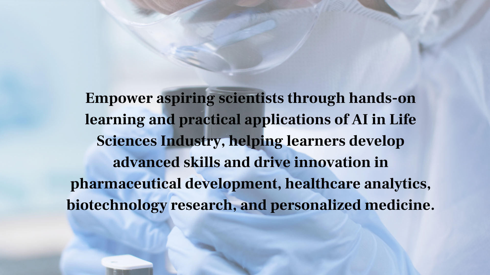
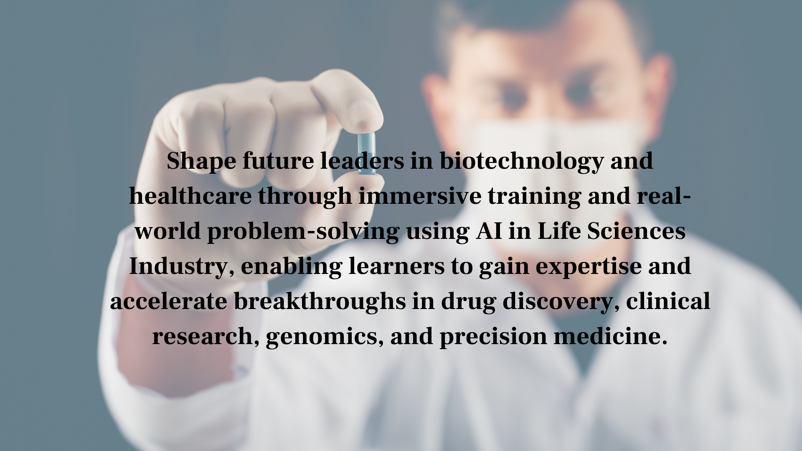

AI in Life Sciences Industry : How Artificial Intelligence Is Transforming Biotech and Pharma
Artificial intelligence is reshaping every segment of the life sciences industry, from drug discovery and clinical development to diagnostics, medical devices, and healthcare delivery. AI in life sciences industry is not a future prospect but a present reality, with AI already contributing to approved medicines, diagnostic tools, and clinical decision support systems. The life sciences industry is investing heavily in AI because it offers the potential to address the fundamental challenges of high costs, long timelines, and high failure rates that have long characterized drug development.
The impact of AI in life sciences industry spans the entire value chain. In research, AI accelerates target discovery and drug design. In development, it optimizes clinical trials and predicts regulatory outcomes. In manufacturing, AI improves quality control and process efficiency. In commercial operations, it enables more precise patient identification and market access strategies. Understanding AI in life sciences industry is essential for anyone working in or investing in the sector.

AI in Life Sciences Industry : How Artificial Intelligence Is Transforming Biotech and Pharma
Table of Contents
Key Applications of AI in Life Sciences Industry
AI in Life Sciences Industry is transforming drug discovery, clinical development, diagnostics, genomics, biotechnology, and pharmaceutical manufacturing. By leveraging artificial intelligence, machine learning, deep learning, and advanced analytics, organizations can process enormous biological datasets and uncover insights that would be impossible to identify using traditional methods. AI-powered technologies help researchers accelerate target identification, optimize lead compounds, predict biological activity, and reduce the overall time required to bring new therapies to market. As a result, AI in Life Sciences Industry has become a strategic priority for pharmaceutical companies, biotechnology firms, healthcare providers, and research institutions worldwide.
Beyond drug discovery, AI in Life Sciences Industry is revolutionizing clinical trial design, patient recruitment, disease diagnosis, and healthcare decision-making. Machine learning algorithms can identify suitable patient populations, predict treatment responses, and optimize trial endpoints to improve success rates. AI-powered diagnostic systems analyze medical images, genomic data, and electronic health records to support earlier disease detection and more accurate clinical decisions. In genomics and multi-omics research, AI in Life Sciences Industry enables scientists to identify disease mechanisms, discover biomarkers, and develop personalized medicine approaches that improve patient outcomes.
- AI-accelerated drug target identification and validation
- Clinical trial design optimization and patient selection
- AI-powered diagnostic imaging and biomarker analysis
- Genomics and multi-omics data interpretation
Leading AI in Life Sciences Industry Companies
The AI in Life Sciences Industry ecosystem includes pharmaceutical companies, biotechnology organizations, AI-native drug discovery startups, healthcare technology providers, and academic research institutions. Companies such as Recursion Pharmaceuticals, Insilico Medicine, Exscientia, and BenevolentAI have built their business models around applying artificial intelligence to accelerate therapeutic discovery and development. These organizations utilize machine learning, generative AI, and predictive analytics to identify novel drug candidates, optimize research workflows, and improve decision-making across the drug development pipeline.
Large pharmaceutical companies including Pfizer, Roche, AstraZeneca, Novartis, and Johnson & Johnson have also invested heavily in AI-driven innovation initiatives. In addition, major technology companies such as Google, Microsoft, Amazon, and NVIDIA provide cloud infrastructure, AI platforms, and computational resources that support AI in Life Sciences Industry applications. Through strategic partnerships and collaborations, these organizations are helping advance precision medicine, digital health, genomics research, and next-generation healthcare solutions that improve both scientific outcomes and patient care.
- AI-native drug discovery companies leading innovation
- Major pharma AI integration and investment
- Technology company life sciences AI platforms
- Academic and government AI life sciences initiatives

AI in Life Sciences Industry : How Artificial Intelligence Is Transforming Biotech and Pharma
Benefits of AI in Life Sciences Industry
AI in Life Sciences Industry offers significant advantages by reducing research timelines, lowering development costs, and improving the probability of success across pharmaceutical and biotechnology programs. Traditional drug discovery processes often require years of experimentation and substantial financial investment. AI technologies accelerate these workflows by rapidly analyzing chemical structures, biological pathways, clinical data, and scientific literature to identify the most promising therapeutic opportunities. This enables organizations to make data-driven decisions more efficiently while reducing resource consumption.
Another major benefit of AI in Life Sciences Industry is its ability to enable personalized medicine and precision healthcare. By integrating genomic information, patient records, biomarker profiles, and treatment histories, AI systems can support individualized treatment recommendations and improve therapeutic effectiveness. AI-driven analytics also enhance clinical trial performance, optimize manufacturing processes, improve supply chain management, and strengthen regulatory compliance efforts. These capabilities help life sciences organizations remain competitive while delivering innovative treatments to patients more quickly.
- Reduced drug development timelines and costs
- Exploration of vast biological and chemical spaces
- Improved clinical trial success rates
- Personalized medicine enabled by patient data integration
Key Features of AI in Life Sciences Industry
Modern AI in Life Sciences Industry platforms combine artificial intelligence, machine learning, cloud computing, big data analytics, and bioinformatics technologies into unified research ecosystems. These platforms support drug discovery, genomics analysis, biomarker identification, clinical decision support, and healthcare analytics through advanced computational capabilities. By integrating multiple data sources into a single environment, researchers can generate actionable insights more quickly and accurately.
Organizations adopting AI in Life Sciences Industry benefit from improved scalability, automation, collaboration, and predictive modeling capabilities. AI-powered platforms continuously learn from new biological and clinical data, enabling researchers to refine hypotheses, improve predictions, and accelerate innovation. As digital transformation continues across healthcare and biotechnology sectors, AI-driven solutions will become increasingly essential for maintaining research efficiency and competitive advantage.
- Machine learning-driven drug discovery
- AI-powered genomics and multi-omics analysis
- Clinical decision support systems
- Predictive biomarker identification
- Automated data analysis workflows
- Cloud-based life sciences platforms
- Healthcare analytics and forecasting
- Precision medicine enablement
Future of AI in Life Sciences Industry
The future of AI in Life Sciences Industry is being shaped by advancements in generative AI, autonomous research systems, precision medicine platforms, and real-time healthcare analytics. Future AI models will be capable of designing novel drug candidates, predicting clinical outcomes, and optimizing treatment strategies with unprecedented accuracy. As computational power increases and biological datasets continue to expand, AI will become increasingly integrated into every stage of the life sciences value chain.
Emerging innovations in AI in Life Sciences Industry include autonomous drug discovery laboratories, AI-designed clinical trials, digital twins for patient simulation, and intelligent healthcare systems that provide real-time treatment recommendations. Regulatory agencies are also developing frameworks to support the responsible adoption of AI technologies within healthcare and pharmaceutical environments. As these technologies mature, AI in Life Sciences Industry will continue to accelerate scientific discovery, improve patient outcomes, and transform the future of medicine on a global scale.
- Autonomous AI drug discovery systems
- AI-designed and monitored clinical trials
- Real-time AI-powered precision medicine platforms
- Regulatory framework maturation for AI life sciences tools